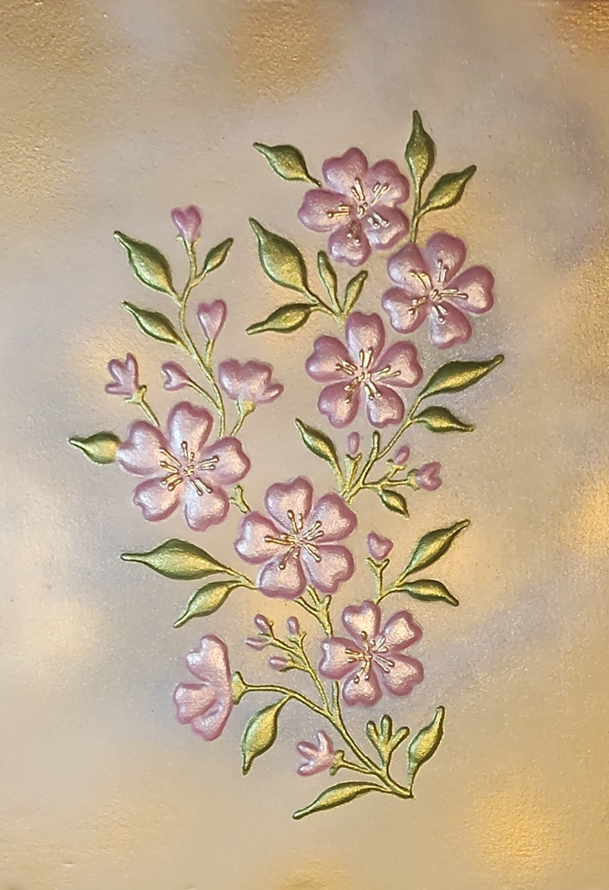

NICOLETA FILIP ART
FLORES FRUTALES
Ramas floridas de pequeñas flores rosadas, capullos y hojas verdes doradas recorren verticalmente el fondo texturizado.
Sobre la obra
Una composición botánica de ramas ascendentes que alternan flores abiertas, capullos y hojas estilizadas. La distribución irregular crea ritmo y una sensación de crecimiento natural.
Presentación artística
La disposición vertical dirige la mirada por las ramas y sus pequeñas flores. Los reflejos dorados resaltan los contornos y aportan continuidad visual al conjunto.
Ficha técnica
- Dimensiones
- 23 × 32 cm
- Soporte
- Madera
- Técnica
- Pasta de relieve, pintura y acabados metalizados; composición botánica en relieve.
- Categoría
- Floral
Si deseas recibir información sobre esta obra, puedes solicitarla directamente.
SOLICITAR INFORMACIÓN →